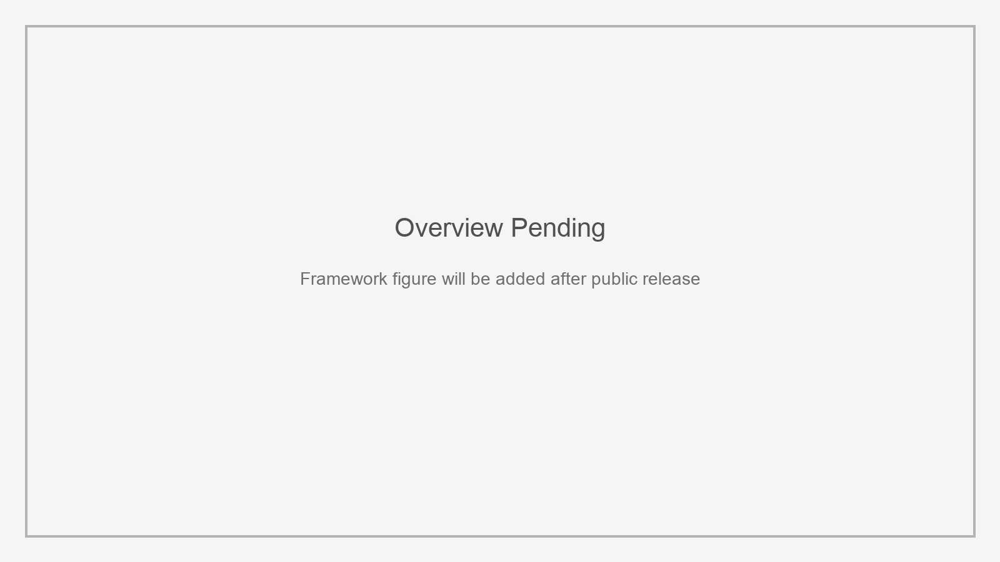

NotaryMark: Multi-Bit Watermarking for Black-Box Dataset Usage Auditing in Text-to-Image Diffusion Models
ACM CCS 2026
1. Xi'an Jiaotong University 2. Vrije Universiteit Amsterdam 3. Zhejiang University

Abstract
The abstract will be added after the public paper or preprint becomes available.
Resources
Citation
@inproceedings{YDSMWZ26,
author = {Xinyi Yu and Linkang Du and Zhou Su and Min Chen and Yuntao Wang and Zhikun Zhang},
title = {{NotaryMark: Multi-Bit Watermarking for Black-Box Dataset Usage Auditing in Text-to-Image Diffusion Models}},
booktitle = {{CCS}},
publisher = {ACM},
year = {2026},
}